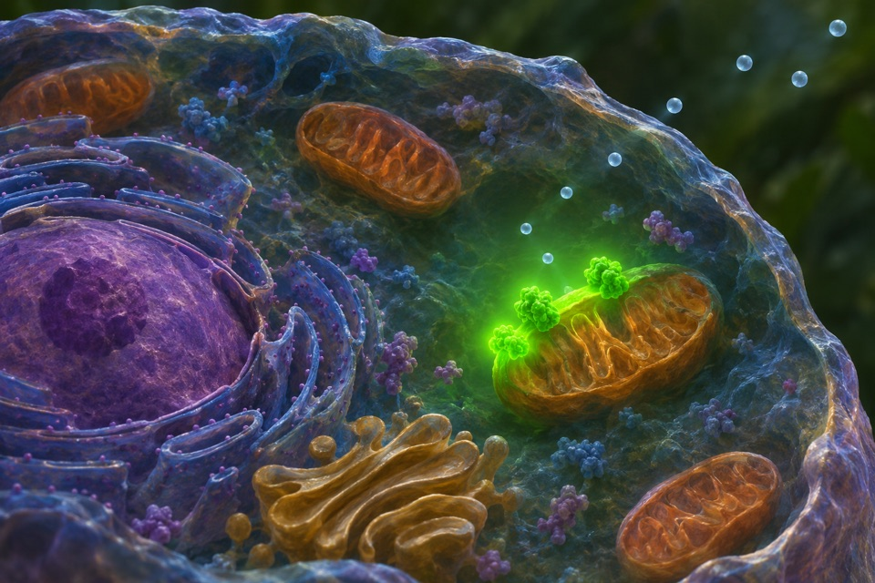
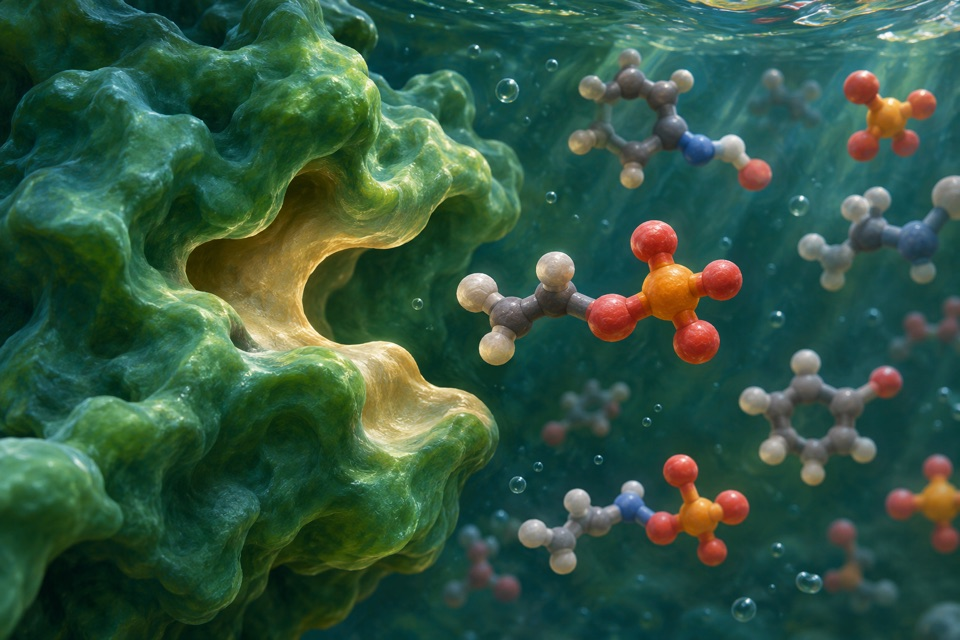

Module 01
Pulvinus development for reversible leaflet folding
Score identity and anatomy of the motor organ separately from the timing and extent of leaflet movement.
Evidence recordOpen any of the ten modules to see the reported observation, its sources, and the research questions still open.
Score identity and anatomy of the motor organ separately from the timing and extent of leaflet movement.
Evidence record
Distinguish light-dependent cellular hydrogen evolution from oxygenic photosynthesis and dark background.
Evidence record
Measure local, reversible fluorescence changes associated with nitric oxide.
Evidence record
Measure water leaving the osculum as ambient flow varies.
Evidence record
Measure germination under contrasting light sequences and distinguish reversible induction from dormancy depth.
Evidence record
Demonstrate carbon–phosphorus bond cleavage and trace the phosphorus-containing products.
Evidence record
Measure the timing of reporter cleavage in an individual cell.
Evidence record
Measure the propagation of an arm bend during reaching-like extension.
Evidence record
Measure blade inclination and joint response independently from culm height.
Evidence record
Measure isoamyl acetate separately from other volatile fermentation products.
Evidence record